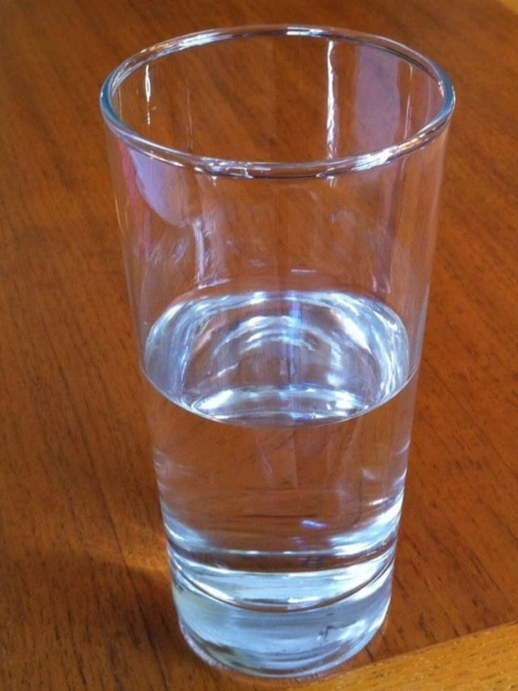

Desafios do Uso da Água no Meio Rural
A água é um recurso fundamental para a produção agrícola e para a vida nas zonas rurais, mas sua disponibilidade vem se tornando cada vez mais limitada devido a fatores como mudanças climáticas e uso inadequado.
O manejo sustentável da água, com tecnologias como irrigação eficiente e conservação de nascentes, é essencial para garantir o abastecimento das comunidades rurais e a produtividade das culturas.
Investir em práticas conscientes de uso e recuperação dos recursos hídricos fortalece a resiliência do meio rural frente à escassez e contribui para a preservação ambiental.